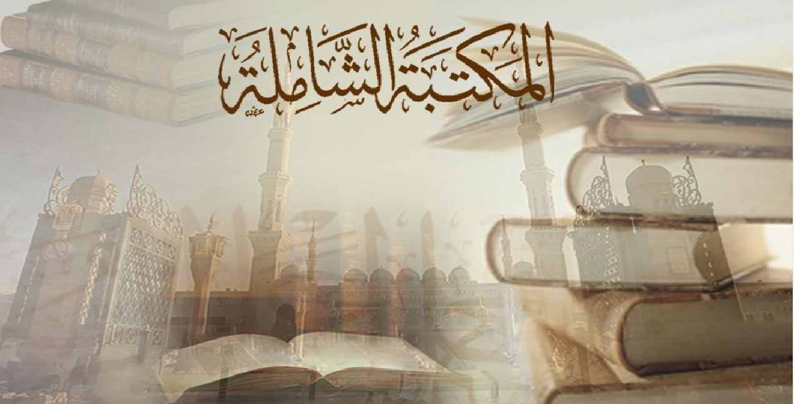
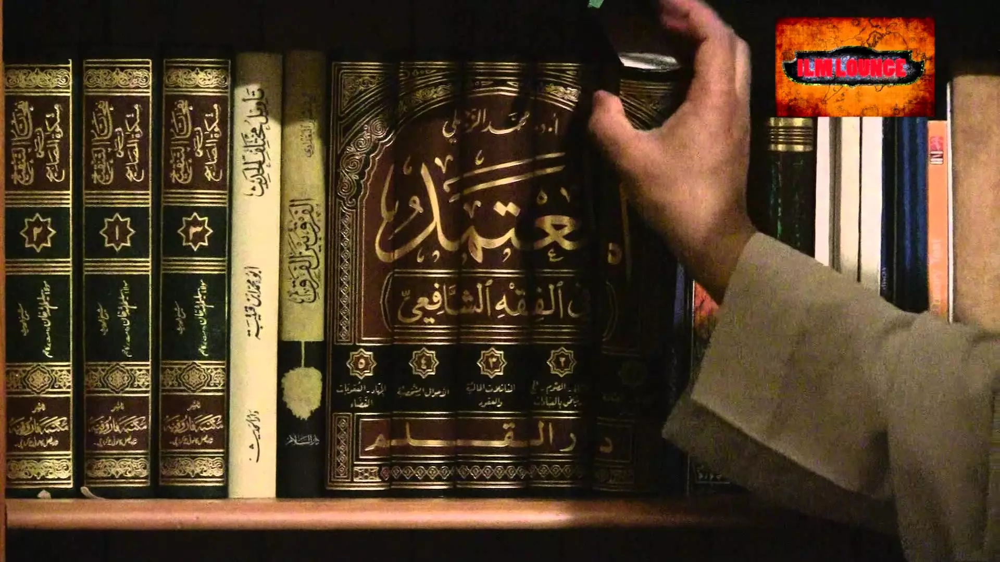

المکتبۃ الشاملہ
یہ ایک ڈیجیٹل لائبریری ہے جسمیں ہزاروں ہر مکتبہ فکر کی کتب موجود ہیں۔ نا یہ کہ صرف یہ سکھایا جاتا ہے
بلکہ لائبریری کے ہر کمپوٹر میں انسٹال ہے اور روزانہ کئی طلباء اس سے استفادہ بھی کرتے ہیں۔
ٹائپنگ کورس
لائبریری میں موجود کمپیوٹرز کی سہولت سے فائدہ اٹھاتے ہوئے ہر سال سینکڑوں طلباء کو ٹائپنگ کورس کروایا
جاتا ہے۔ جو کہ عربی ٹائپنگ اردو ٹائپنگ اور انگلش ٹائپنگ پر مشتمل ہوتا ہے۔ کورش کے آخر میں جائزہ لے
کر طلباء کو اسناد بھی جاری کی جاتی ہیں۔
اسلامی بینکاری
اس کورس میں طلباء کو اسلامی بینکاری کے متعلق معلومات فراہم کی جاتی ہیں اور اس کی شرائط و لوازم سے
بھی پردہ اٹھایا جاتا ہے۔ اس سے طلباء کو وسعت ذھنی حاصل ہوتی ہے اور جدید اسلامی بینکاری کا نظام
سمجھنے میں مدد ملتی ہے۔

بین الاقوامی لائبریریز اور لائبریریز کا نظام
اس کورس میں طلباء کو دنیاء کی مشہور و معروف لائبریرز کا تعارف کروایا جاتا ہے اور ان کے نظام کارہائے
پر تفصیل سے روشنی ڈالی جاتی ہے۔ اس کے علاوہ لائبریری کے لیے جن جن چیزوں اور سہولتوں کی ضرورت ہوتی ہے
ان پر بھی تفصیلی بحث کی جاتی ہے۔ لائبریری میں کتب جس ترتیب سے رکھی جاتی ہیں ان طریقوں کو بھی سیکھا
جاتا ہے۔